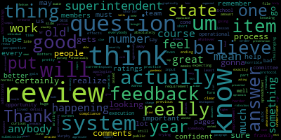
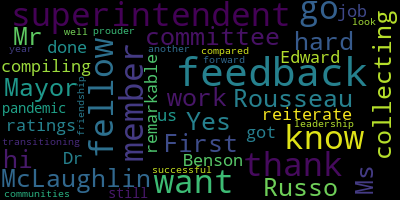

AI-generated transcript of Committee of the Whole Meeting - Superintendent's Evaluation
English | español | português | 中国人 | kreyol ayisyen | tiếng việt | ខ្មែរ | русский | عربي | 한국인
Back to all transcripts
[Lungo-Koehn]: It wasn't fixed and now it's still saying there's a engagement and strategic planning meeting 5 to 6 30 tonight, and it doesn't list this one.
[Edouard-Vincent]: So this, this meeting is posted on the main page on the main page of the website if you scroll to the bottom it has today's meeting posted. So if it's a second, a second posting we've we've tried to get it on the front page. The upcoming meetings right now. So I can definitely, I didn't realize that the other calendar had incorrect information. So I will get it there as well. But today's meeting is posted on the main page at the bottom.
[Lungo-Koehn]: Okay. I just want to make sure it's posted somewhere. Let's see.
[Edouard-Vincent]: And Susie just sent the revised schedule to Rachel right now as well to see if she can make those adjustments on that other calendar.
[Lungo-Koehn]: Awesome. Great, great. Thank you. Thank you. Okay.
[Graham]: Mayor? Yes, Member Graham? Are we still a physical posting city? So in other words, isn't the question whether Clerk Hurtubise has this physically posted in order for it to be a compliant meeting? Is that correct still? Yes. Okay, so does the clerk have this meeting posted?
[Edouard-Vincent]: Yes.
[Graham]: Oh, okay.
[Edouard-Vincent]: Yes. All meetings are sent to the clerk's office first. He gets it. Okay. First listing, yes.
[Graham]: Um, and then, you know, questions about not being a physical posting city, I think are important ones for the city to take up. But, um, as it relates to compliance with the open meeting lie, I think as long as it's posted with the clerk, we're okay. I'll be right.
[Lungo-Koehn]: Yeah, I think officially we're okay. I just still have an issue with it being wrong on the school website. Oh, yeah. I just just want to make sure it nicely that we, you know, try to get all Susie and Lisa and Rachel Powery now who's involved in the calendar to make sure they're talking every day and getting the right information out.
[McLaughlin]: Mayor, Lisa Evangelista has her hand raised. Oh, yep.
[Evangelista]: Hi, Mayor. Hi, Lisa. I know it's confusing, I'm sorry, but it's always posted, obviously Susie sends it to Adam first, Jackie gets it, so it's put on the website. I put it on the website. It's also on the blog and it's also sent to all the PTO Facebook pages. So we do try to get the word out as best we can. As for the calendar, Rachel always handled it just because the physical plant of the buildings who are under community schools. And so that's why she was assigned the master calendar, because they needed to know who was in the buildings at what time and for how long. So with school committee not being in buildings right now, I think it just went by the wayside. So I'm gonna take the blame for that because Susie is new and she wouldn't have known that either. So anyway, now we all know, so we'll make sure Rachel's in the loop.
[Lungo-Koehn]: Okay, awesome. Okay, from now on then if a meeting is changed.
[Evangelista]: The website and the calendar are two different things and unfortunately I handle by two different people.
[Lungo-Koehn]: Okay, so when the change comes in, Ms. Wise does the agendas, so you'll send the changes to Rachel and Lisa. Okay. Okay. Perfect, thank you.
[Evangelista]: All right, sorry, thank you. No, that's okay.
[Lungo-Koehn]: All right, we're recording, we're live. Please be advised that on Monday, March 1st, 2020 at 4.30 PM, there'll be a committee of the whole meeting held through remote participation pursuant to Governor Baker's March 12th, 2020 order suspending certain provisions of the open meeting law, chapter 30A, section 18, and the governor's March 15th, 2020 order imposing strict limitations on the number of people that may gather in one place. This meeting of the Medford School Committee will be conducted via remote participation to the greatest extent possible. Specific information, the general guidelines for remote participation by members of the public and or parties with the right and a requirement to attend this meeting can be found on the city of Medford website at www.medfordma.org. For this meeting, members of the public who wish to listen or watch the meeting may do so by accessing the meeting link contained herein. No in-person attendance of members of the public will be permitted, but every effort will be made to ensure that the public can adequately access the proceedings in real time via technological means. In the event that we are unable to do so, despite best efforts, we will post on the City of Medford or Medford Community Media websites an audio or video recording, transcript or other comprehensive record of proceedings as soon as possible after the meeting. The meeting can be viewed through Medford Community Media on Comcast channel 22 and Verizon channel 43 at 4.30 PM. One of the phone numbers you can call is 301-715-8592. please enter meeting ID 97190023060 when prompted. Since the meeting will be held remotely, participants can log or call in by using the following link or call-in number. Additionally, questions or comments can be submitted during the meeting by emailing medfordsc at medford.k12.ma.us. Those submitting must include the following information, your first and last name, your Medford Street address, your question or comment. The agenda will be as follows, performance evaluation of superintendent Marice Edouard-Vincent for school year 2019-2020. Signed, Dr. Marice Edouard-Vincent, superintendent of schools. I know we have member McLaughlin to thank for coordinating all of the evaluations. Thank you, member McLaughlin.
[McLaughlin]: You're welcome, Mayor. And also, Member Ruseau, for creating the templates, because it would have been double the job had those not existed. So I'm happy that they exist. Thank you, Member Ruseau. And we'll have them for next time around to guide the process. So that was really helpful.
[Lungo-Koehn]: Yes. Thank you, Member Ruseau. Very helpful. Is there anything you want to screen share? Or does anybody have questions?
[McLaughlin]: Would you like us to screen share, Mayor? I can do that.
[Lungo-Koehn]: I think that might be best, and we can discuss from there. Okay.
[Ruseau]: I just have a quick question, a process question. Thank you. I apologize for not knowing this, but there is, I believe there's a state system that the review is input by Mr. Murphy or somebody that is a compliance requirement like this. We don't just create this spreadsheet and then file it away. The state gets it. Um, and, um, I just wanna, um, understand, you know, that submission, um, what, you know, for the numbers that will be going over, I'm pretty clear that that's exactly what they'll be expecting. Um, but from the feedback perspective, um, I'm not really sure what the form is that, you know, if the feedback even gets put into the state system or not. And, um, I'm just curious if anybody does know that detail because I think feedback, at least for myself, was certainly a harder part of this, and where that's gonna go and how that's gonna go matters, I think.
[Lungo-Koehn]: Dr. Edward-Vincent?
[Edouard-Vincent]: We do have a system, TeachPoint, and it will go into that portal. And then the hard copy of all of the documents will go into my hard file that is kept in HR. So the hard copy of all the documents that were sent to me will be collated and placed in the hard file. For DESE purposes of reporting, it's the rating that gets the overall rating is what ends up getting reported in the DESE portal.
[Lungo-Koehn]: Great, thank you. Member McLaughlin?
[McLaughlin]: So I'm wondering, based on what Member Ruseau was just saying a moment ago, do we need a motion that these forms are used and moved forward in the future through DESE, or are you just saying that this is part of the process that already exists within DESE that they get these forms? Do we need to formally accept these forms now that they've been created? I'm wondering about process as well.
[Edouard-Vincent]: I think because this particular you know, last go around when I got it, it wasn't as comprehensive with the, you know, the spreadsheet and the tables. So this kind of gives a very detailed breakout. So this whole document can be probably attached as an artifact or attached to the spreadsheet. the portal, but like all the documents that were submitted, I will just have all of this kept in the hard file and then uploaded to the portal so that DESE has it as a record. But it's the rating that normally is what goes into the system, the official rating.
[McLaughlin]: So can you guys see this? Are you seeing my screen now? Yeah, okay. I know it's hard to read with the feedback, so I can just collapse the files on the feedback. So we're just looking at, if you guys want, Mayor, we're just looking at the measure and the score, or do you wanna leave open the feedback cells as well, and I can just scroll over for each member? Like, how do you guys wanna do this?
[Lungo-Koehn]: We can go over maybe the scores first and then just briefly discuss anything that wants to be discussed as far as the comments go.
[McLaughlin]: Okay. Do you guys want me to collapse the cells so that it's easier to just see these or do you want to, are you fine with just leaving them open? Give me some direction.
[Lungo-Koehn]: I think, I mean, I think I could read them the way they are. If you want to scroll down as I go standard based on curriculum, Standards-based unit design, 3.57. Lesson development support, 3.5. As far as instruction is concerned, that's a 3.53. Instructional practices, 3.76. Quality of work, 3.53. Diverse learners needs, 3.31. And then as 1.3 assessment, 3.37. Variety of assessments, 3.19. Adjustment to practice, 3.54. 1.4, evaluation, 3.45. Educator goals, 3.33. Observations and feedback, 3.79. Ratings, 3.33. Alignment review, 3.33. Data informed decision-making, 3.45. Knowledge and use of data, 3.51. School and district goals, 3.44. Improvement of performance effect, 3.39. Standard two, management and operational, and that's a 3.52 total. Environment, 3.51. Plans, procedures, and routines, 3.36. Operational systems, 3.54. Student safety, health, and social and emotional needs, 3.64. Human resource management and development, 3.41. Recruitment and hiring strategies, 3.61. Induction professional development and career growth strategies, 3.21. Scheduling and management Information Systems, 3.49. Time for Teaching and Learning, 3.36. Time for Collaboration, 3.61. Laws, Ethics, and Policies, 3.75. Laws and Policies, 3.71. Ethical Behavior, 3.79. Fiscal Systems, 3.42. Engagement, 3.56. Family engagement, 3.61. Community and business engagement, 3.5. Sharing responsibility, 3.48. Student support, 3.5. Family collaboration, 3.46. Communication, 3.66. Two-way communication, 3.53. Culturally proficient communication, 3.79. Family concerns, 3.5. Professional culture, 3.58. Commitment to high standards, 3.62. Commitment to high standards, 3.61. Mission and core values, 3.84. Meetings, 3.42. Cultural proficiency, 3.57. Policies and practices, 3.57. Communications, 3.53. Communication skills, 3.53. Continuous learning, 3.74. Continuous learning with staff, 3.71. Continuous learning with administrator, 3.76. Shared vision, 3.53. Managing conflict, 3.46. Response to disagreement, 3.27. Conflict Resolution 3.49, Consensus Building 3.61. Mayor? Yes, Member Van der Kloot.
[Van der Kloot]: Yes, you're done, right? Yes, thank you. So I just have to say that this is really an outstanding review for a new superintendent, or a still newish superintendent, if you would. That not one of the numbers is lower than a three, and most of them are 3.5 or higher is just truly remarkable. So, you know, the overall picture that we see here is of a very strong performance by the superintendent. For the sake of the audience, I just want to mention that it's a numbers we were reading was a score. each of the committee members rated the superintendent. One was the lowest rating that she could receive in an area and four was the highest. And we could differentiate by doing a 3.5. But what you're seeing is that in all areas, the superintendent had a very strong showing where not only the majority of the committee, but the whole committee thought that she was doing work of three or higher. Remembering 4.0 is the very highest. And we saw the breakdown of the sheets in some areas, people gave her fours completely. You know, we did it a little bit differently. In the future, I'd like to spend a little bit more time talking through each of the areas with my fellow committee members, just so that we're all sure that we're rating the particular item in the correct way. But again, really, congratulations, Superintendent. I have to say this is a very, very strong showing. And I think that when you opened it up today, we must have seen that that smile must have lit up your office for sure.
[Edouard-Vincent]: Thank you so much, member van de Kloet. Thank you so much, members of the school committee. I was really pleased, very happy with the evaluation and the level of complexity, the spreadsheet and being able to look at the feedback and read the narratives and the descriptions that went that were given so I know that a lot of time and work went into that process and I appreciate it incredibly and I'm you know very honored and I always say in my communications that I am the proud superintendent of Medford Public Schools and this evaluation confirms that we believe that the work that needs to be done in Medford is the work that is taking place. And I am committed to continuing to work hard. And since you as a school committee member, members as a team gave fractional improvements where there are areas that clearly I can continue to push myself and strive. for those fours, I'm gonna continue to do that. And so I will continue to keep applying myself and looking at the areas where there was more constructive feedback, where the opinion was that I could be doing more, and I will continue to try to do that. Thank you.
[Lungo-Koehn]: Thank you, Member Van der Kloot. Thank you, Dr. Edward-Vincent. Member McLaughlin? And then Member Ruseau?
[McLaughlin]: Thank you. I also wanted to say thank you Dr. Edouard-Vincent, it's been a pleasure working with you. And it was really interesting to be able to put this data together I actually, you know, it was tedious for sure, but it was really interesting because it let me do a deep dive into the evaluations and really see sort of where the members were and be able to do some comparative sort of, you know, layperson analysis, if you will, or what have you, and the narrative was really helpful as well. And, and I think the message is very much that, you know, we're, we're fortunate to have you. You're doing a great job in a lot of areas. I think this evaluation certainly shows your strengths. And I also think it does show us where we have some work to do. And I'm looking forward to working. I think that for every member here that was able to share where there was work to do, there was full confidence that you recognize that and are capable and able to be a leader in those realms. So I'm excited about that, especially with a review like this again on year number three. So I think that this is great. And just for the record, Mayor, also, I'm assuming this is, I know that the superintendent was saying that this goes in to the file, and I'm assuming, you know, these are public records, obviously, we're showing them in a public meeting, so folks can see them if they want to look further. Is that accurate, Mayor?
[Lungo-Koehn]: This is my actually first time evaluating the superintendent. Member Van der Kloot, can you speak to that at all? Do you know where the evaluations usually go?
[Van der Kloot]: You know, I don't know. We always did them in public or we did a, you know, spoke about our evaluations in public. Then they were given to the superintendent. I would assume that it's just a public, you know, paper, which is available to the public, but I don't know how we want to post it.
[McLaughlin]: Just in response to that, I do also want to say, if I could, Mayor, is it okay for me to just respond?
[Lungo-Koehn]: Yes, Member McLaughlin, then Member Rizzo.
[McLaughlin]: Yep. Just in response to that too, I just want to, again, I think that this is a really great example of process and, you know, what didn't occur in the past. And so I think both having a narrative that explains what this process is, and as Member van de Kloot was saying, having some discussion about these you know individual items and also as the superintendent is evaluating herself knowing that this will be the form um when she does her self-evaluation that will be um the rubric that we'll be working with so that it will help inform that and the process as well I think is really critical so I think also for those who are watching the good news is is that there's a process in place there's a form that you know is existing we'll be using moving forward and um I think rules policy and the equity subcommittee is a good example of sort of really getting these policies moving and putting things into place. So I'm very happy to see this. And again, I want to thank the committee for putting the processes in place and making them transparent. Thank you.
[Lungo-Koehn]: Member McLaughlin, member Rousseau?
[Kreatz]: Mayor, could I go after member Rousseau?
[Lungo-Koehn]: Yes, member, member Kreatz, I didn't see you there. Okay, no problem, that's fine. Okay, thanks.
[Ruseau]: Thank you. We will be doing this all over in 16 weeks. So one of the side effects of being so late is that we will actually gain practice in a shorter amount of time than normal. So I hope everybody, as I was writing my own comments and trying to do the review, it was challenging to realize that this is not for this year. And I think when people, if anybody in the public is looking at this, I think it's important to remember that this is for the year ending June 30, 2020, 30, 31, whatever the numbers are. So we will be at this again in very short order. And the only other, the only additional feedback from what's in here is that, you know, the superintendent, I don't believe lived through the previous protocol for doing a review, which was absolutely horrible. pages and pages of questions for which we didn't have answers. And this was a huge improvement that the state put through, DESE, I believe. And it's great, but it still does have some of the shortcomings that the old system had. And that is that we may be asked a question, I'm just looking at the current screen, you know, lesson development support. I mean, there's a paragraph somewhere that tells you what that means. And as with the old system, but in much, much less severity, individual members may not actually be able to answer the question. The problem is, is that we must answer the question. We must put a number for every item. There's not optionals. So I would just urge the superintendent and her team to think about each of these items and realize that the members really appreciate a lot, having had work product presented in some fashion, whether it's simply a report or in some partisan presentation, that will allow us to feel like we have a clue what that thing meant when we get to the review. And again, you know, this this is a dramatically better review process than the old one. And I feel like it's actually doable, like asking that question of the old system, would have been ridiculous. I mean, just the graphically detailed questions we had to answer before were impossible for anybody to truly give a good review on every item. So I'm excited that most of the things that I was putting a number for, I actually knew the answers to. And that made me feel really good and confident about my ratings, but there certainly were a couple of items and I can't name them off the top of my head where I kind of felt like, you know, I don't know. I mean, it's not that I don't know, because I don't think it's happening. It's because during the course of our work, and the pandemic obviously didn't help, during the course of our work, I didn't really feel like I had an understanding of how something was happening that we were actually supposed to review you on. The environment, operational systems. I'm very confident that the operational systems are being worked on very aggressively, but Do I have a, have I ever seen a document that explains what those are? No. So that's just the only feedback I have is sort of to help us in the next review, which will be remarkably soon. It would be good to also think about this list, which I don't believe will probably change for many years to come and think about how you can reveal that these items are happening to the school committee through the course of a year. So that's all I really had to say on that.
[Lungo-Koehn]: So member Kreatz.
[Kreatz]: Yes, hi. First, I just want to thank my fellow committee members, Ms. McLaughlin and Mr. Russo for all their hard work collecting and compiling the ratings and feedback. And I just, I won't go on because she has all the feedback, but I just want to reiterate what's in my feedback is that Dr. Edward Benson, you have done a remarkable job as superintendent. You got us through the pandemic. We're still transitioning. and we're, you know, we're doing very well compared to some of our other fellow, you know, communities. I couldn't be prouder to have you as our superintendent. And I thank you for your leadership, your friendship, and I look forward to another successful year.
[Edouard-Vincent]: Thank you very much. Thank you.
[Mustone]: That's Member Mustone. Thanks, Mayor. Dr. Maurice, I just want to say I thought it was very telling that you scored so high on ethics. And I think that's what really shows the community or the community already sees it, that you are such a respectable or you respect others, you're respectable, you are open minded. You listen, you think about right and wrong, and you really work together with your team and with the families and the students. And I was glad to see that ethical number, because I really do think you're one of the most justice-centered person I know. So thank you for being here.
[Edouard-Vincent]: Thank you, Member Mustone.
[Lungo-Koehn]: Thank you, Member Mustone. Member Graham?
[Graham]: Thank you, Maurice for all your hard work, I think, you know, doing a review is always sort of challenging because you're trying to encapsulate a lot of work into a few bullets and to be concise and but to be specific so it's. it's a really complicated process on its best day. It's even more complicated when we sort of throw at you seven people's like opinions of the same question. So I do want you to know that if you have questions about my comments in particular, I'm always happy to answer them. And I do know that as someone who's invested in growth mindset like yourself, that you probably read the areas of opportunity as like the loudest, shoutiest things on this review because that is what happens when you are committed to moving forward. And so certainly making sure that you know that we weren't just like loudly shouting about the things that you could continue to progress on and do better on, but just overall your commitment over this pandemic has been remarkable. So thank you. Thank you, Member Graham. Thank you so much.
[Lungo-Koehn]: Thank you, Member Graham. I think I'm the last one. It was hard for me. It was January, February of 2020. I was drinking from a fire hose myself and watching you at school committee meetings and all the work that you've done, Dr. Edouard-Vincent, and then all of a sudden COVID hit and we were running crazy with what to do and how to best serve our students and obviously our faculty. And I hope through it all, you have showed true leadership. You've been responsive and communicated every step of the way, not only with the committee, but also with parents and guardians through your weekly updates. I think the communication has so much improved over the last year. And I'm just really proud of you for that. It's something that's meant a lot to me, communication and transparency. So I just, I really commend you and I know you're going to continue to move forward and develop into an even better superintendent. And I hope when we're evaluating you, and I think somebody said 16 weeks, they have your response to COVID and, you know, trying to get our kids back to school and getting them back safely. You've proven to be a true leader in that area. And it's one that we all thank you for. Thank you, Mayor. Member Rossell?
[Ruseau]: Thank you. I don't know, actually, if this is usually something brought up, but the school committee doesn't review the other people on this call, the other administrators, and that's both a good and a bad thing. The bad thing is that we don't have an opportunity to say how great we think you are, and I think that a lot of my review ratings, especially the higher ones, frankly, were that that the superintendent has assembled a good team and in my comments, you'll see that it's like the execution of what's to come, the confidence in that execution is there. So we don't have an opportunity to review the assistant superintendents, but I hope that they take something from this review to reflect on them as well. I know that that is important to me. So thank you for your great work, all of you, frankly.
[Edouard-Vincent]: Yes. Thank you, member Rousseau. And collaboration was one of my core values, the sea of aces. And so I'm not here without the wonderful senior leadership team that I have. Peter, Suzanne, Dave, and Joan, and Tom who have been with us working hard to make Medford Public Schools the best district in the Commonwealth. And so this is a shared evaluation between all of us. And I thank you for recognizing that they are part of the team and that I cannot do this work alone without the power of a team. So thank you. and I think the members of my senior leadership team as well.
[Lungo-Koehn]: Okay, so this will be posted publicly one way or another, whether that be the website, most likely the website. If nobody else has any further comments, is there a motion to adjourn?
[Ruseau]: Mayor, I think, do we have to motion to accept the review? I think.
[Lungo-Koehn]: Motion to accept the review. Second. Seconded by Member McLaughlin.
[McLaughlin]: Roll call. Yeah, roll call. Kathy Kreatz? Yes. Member Graham? Yes. Member McLaughlin, yes. Member Mustone? Yes. Member Ruseau? Yes. Member Van der Kloot?
[Lungo-Koehn]: Yes.
[McLaughlin]: Mayor Lungo-Koehn?
[Lungo-Koehn]: Yes. Seven in the affirmative, zero in the negative. The review is accepted.
[McLaughlin]: Motion to adjourn.
[Ruseau]: Oh, sorry. I just remember Andrew knows these things much better than me, but I, I believe we also have to put this on the agenda for Monday to vote this in the general meeting as well. Just want to make sure that that happens.
[Van der Kloot]: Yeah, we probably should. I don't know.
[Ruseau]: Yeah, now I get confused on that one.
[Van der Kloot]: Yeah, I don't know. It's because it's a committee of the whole, not a subcommittee. But yes, usually we would move something from the committee of the whole to the regular.
[Lungo-Koehn]: Motion to officially move this to regular agenda for Monday night to be officially approved by member Rousseau, seconded by member.
[McLaughlin]: Actually, may I make a suggested motion? it. I guess I think that it would make more sense to have it reported out at the, um, regular school committee meeting as opposed to another committee of the whole meeting. That is Monday night. That's right. That's right. That's Monday night. Sorry. And may I
[Lungo-Koehn]: Yes. Member McLaughlin.
[McLaughlin]: Yeah. And then also, again, if we could, I would like to make a motion to move to the rules, policy and equity subcommittee, a process, a narrative process for the evaluation moving forward. So in other words, a step-by-step written, you know, here's what we do first, here's what we do second, we look it all over and then bring it back to the committee as a whole to either pass or not pass. But I think for posterity, in addition to these forms that were created that were very helpful, there needs to be step-by-step guidance.
[Lungo-Koehn]: Motion to report this to regular school committee on Monday night for official approval. And a second motion to refer the process to the rules, policy and equity subcommittee to create a process and timeline for how to evaluate superintendent moving forward.
[McLaughlin]: Sorry, I seconded member Ruseau's. I'm sorry, I should have taken a roll call for that before I made the second motion. My apologies, Mayor.
[Lungo-Koehn]: Okay, motion by member Ruseau, seconded by member McLaughlin to move this to the regular school committee for an official vote. Roll call.
[McLaughlin]: Member Kreatz? Member Graham? Yes. Member McLaughlin, yes. Member Mustone?
[Van der Kloot]: Yes.
[McLaughlin]: Member Ruseau? Yes. Member Van der Kloot? Yes. Mayor Lungo-Koehn?
[Lungo-Koehn]: Yes, seven in the affirmative, zero in the negative. Now your motion, Member McLaughlin?
[McLaughlin]: Yes.
[Lungo-Koehn]: To create a policy. Great policy. Seconded by Member Van der Kloot. Roll call.
[McLaughlin]: Member Graham? Yes. Member Kreatz? Yes. Member McLaughlin, yes. Member Mustone?
[Van der Kloot]: Yes.
[McLaughlin]: Member Ruseau? Yes. Member Van der Kloot?
[Lungo-Koehn]: Yes.
[McLaughlin]: Mayor Long-Kourn?
[Lungo-Koehn]: Yes. Seven in the affirmative, zero in the negative. Thank you to that subcommittee. Motion to adjourn? Motion to adjourn by Member McLaughlin, seconded by Member Kreatz. Roll call.
[McLaughlin]: Member Graham?
[Lungo-Koehn]: Yes.
[McLaughlin]: Member Kreatz? Yes. Member McLaughlin? Yes. Member Mustone?
[Mustone]: Yes.
[McLaughlin]: Member Ruseau? Yes. Member Van der Kloot?
[Lungo-Koehn]: Yes.
[McLaughlin]: Mayor Lungo-Koehn?
[Lungo-Koehn]: Yes. Seven in the affirmative, zero in the negative.
Lungo-Koehn
total time: 10.67 minutes
total words: 1376
|
Edouard-Vincent
total time: 5.13 minutes
total words: 636
|
Graham
total time: 1.93 minutes
total words: 290
|
McLaughlin
total time: 5.63 minutes
total words: 1015
|
Ruseau
total time: 6.29 minutes
total words: 999

|
Van der Kloot
total time: 2.59 minutes
total words: 374

|
Kreatz
total time: 0.67 minutes
total words: 126

|
Mustone
total time: 0.75 minutes
total words: 109
|
|
|
|
|
|
|
|
|
|
|
Back to all transcripts
{kind=link}
{kind=link}
{kind=link}
{kind=link}
{kind=link}
{kind=link}
{kind=link}